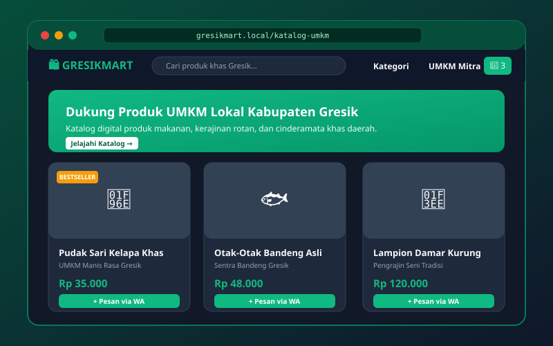

Sistem Informasi
Sistem Informasi
SIAKAD Sunan Gresik Portal
Prototipe sistem informasi akademik terintegrasi untuk mahasiswa & dosen dengan dashboard nilai, kartu rencana studi (KRS), dan monitoring perkuliahan realtime.
PORTFOLIO LOADING
Halo! Saya mahasiswa Sistem Informasi di Universitas Sunan Gresik. Saya memiliki passion mendalam dalam pengembangan web modern, perancangan antarmuka yang intuitif, serta analisis sistem untuk menghadirkan solusi digital yang fungsional dan berdampak nyata.
Undergraduate Student
📍 Universitas Sunan GresikSaya adalah mahasiswa program studi Sistem Informasi di Universitas Sunan Gresik. Ketertarikan saya terletak pada persimpangan antara logika pemrograman, perancangan arsitektur data, dan pengalaman pengguna digital yang intuitif serta berdaya guna tinggi bagi organisasi.
Saya mengutamakan clean code, performa tinggi, desain responsif multi-device, serta pendekatan berbasis data. Setiap project dirancang dengan analisis kebutuhan yang matang untuk memastikan solusi teknologi tepat guna dan mudah dikembangkan lebih lanjut.
Menempuh studi sarjana dengan fokus pada perancangan sistem informasi, rekayasa perangkat lunak web, pemodelan proses bisnis (BPMN), manajemen basis data relasional (RDBMS), serta implementasi algoritma komputasi untuk efisiensi sistem informasi.
Mengembangkan prototipe aplikasi web terintegrasi untuk kebutuhan administrasi akademik dan inventaris digital. Berperan aktif dalam perancangan skema database, pembuatan antarmuka modern yang ramah pengguna, serta integrasi endpoint REST API.
Mengerjakan berbagai project pembuatan website portfolio, sistem katalog digital untuk UMKM daerah Gresik, eksplorasi framework modern, serta implementasi otomasi web dan integrasi asisten cerdas AI.
Peralatan dan teknologi yang saya gunakan untuk merancang antarmuka web modern, responsif, dan interaktif.
Fondasi logika server, arsitektur basis data, dan API terstruktur untuk keandalan sistem informasi.
Alat analisis proses bisnis, kontrol versi kode, serta prototyping visual.
Sistem Informasi
Prototipe sistem informasi akademik terintegrasi untuk mahasiswa & dosen dengan dashboard nilai, kartu rencana studi (KRS), dan monitoring perkuliahan realtime.

Web ApplicationPlatform katalog produk digital dan sistem pemesanan online untuk memberdayakan pelaku UMKM daerah Gresik dengan navigasi yang cepat dan responsif.
 AI & Interactive
AI & Interactive
Website portofolio modern berkecepatan tinggi dengan dark mode, micro-interactions, serta bot AI asisten interaktif untuk menjawab pertanyaan pengunjung secara instan.
Tertarik berkolaborasi, berdiskusi mengenai proyek web & sistem informasi, atau ingin terhubung? Kirimkan pesan Anda di bawah ini:
+6287733430941
@eeiiqqs27
faiqfanani@gmail.com